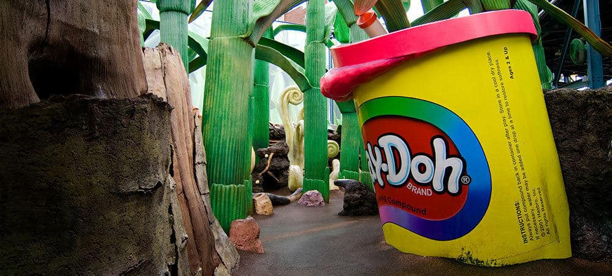
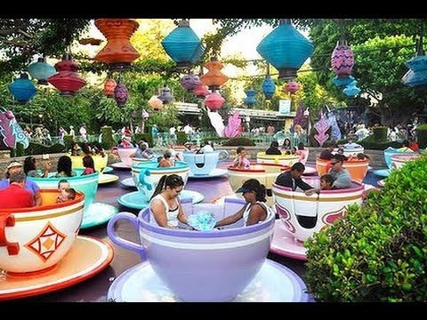
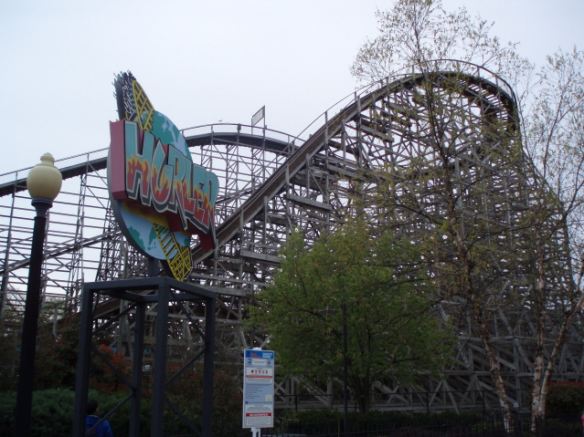
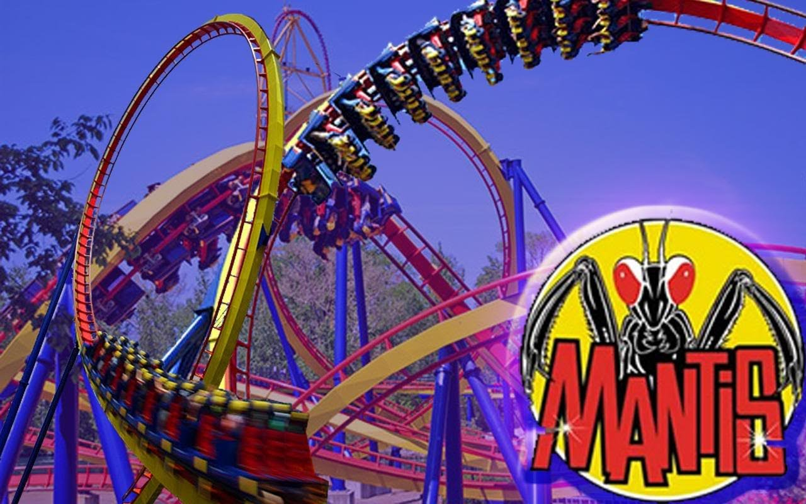

Height Requirement: Less than 4'
The HISTK playground is tons of fun, but adults are too large for the tunnels and caves.
Height Requirement: No height restrictions.
The Tea Cups are fun for all ages, just don't eat too much first!
Height Requirement: At least 4'6"
The Hurler is a classic, but you need to be as least 4' to ride
Height Requirement: At least 5'
The Mantis - an extreme lunch ending coaster. Feet need to be able to touch the ground, so riders must be 5' or taller